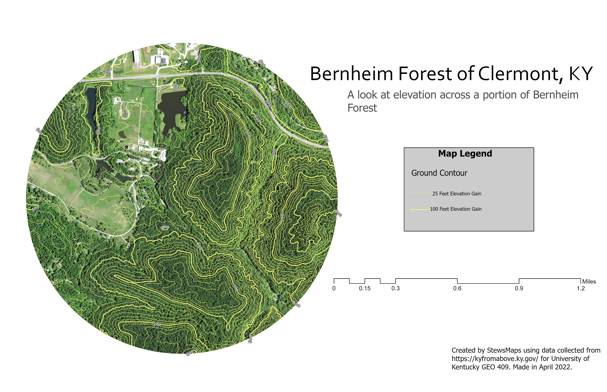

Click here to view this map full screen Enlarge map
The area of interest for these maps is the open area near the visitor center at Bernheim Forest of Clermont, Kentucky. Located just outside of Louisville, Kentucky, this is a stunning forested area.
The goal of this project is to measure and visualize the open green space at Bernheim Forest. This will allow for people to better see the area before visiting.
In the above video, you are able to view a fly over tour of a portion of Bernheim Forest created using Lidar Point data.
Bernheim Elevation Map Download geospatial PDF
This map shows the elevation through contours for a portion of Bernheim Forest.